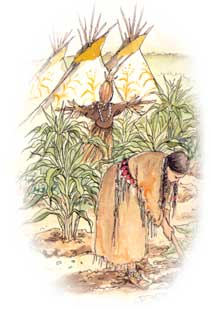
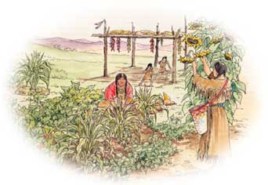
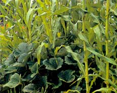
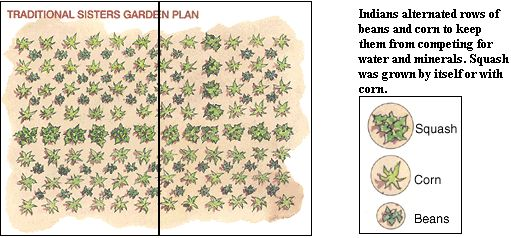
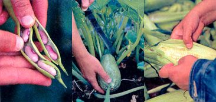
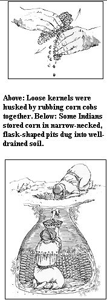

The foundation of our family's survival plan is nothing but a plot of relatively isolated, well-watered land and a stock of Native-American plant seed that we've been growing, storing and upgrading since we first went a-homesteading back in 1968. Since then, I have done my best to assemble the seed, hand-powered tools and simple skills to take part in the cooperation between man and nature that harks back more than 10,000 years to when Homo sapiens first crossed from Eurasia into what is now Alaska. These early hunter-gatherers selected and improved a group of plants that could be hand-grown with relative ease and in sufficient quantity above daily subsistence needs to afford the people leisure time to establish settled, agricultural societies.
Many native species that are still grown today include potatoes, sunflowers, amaranth, quinoa, chilies and many more. But the three foundation plants of early new-world agriculture were, most importantly, the wild grass Zea mays (called maize in most of the world and corn in the U.S.), beans (native legumes of several species) and squash (a curcubit).
The elemental botanical differences between these three species guarantees that they will not all succumb to a single nutrition conflict, pest or meteorological event. Their growth habits and footprints on the land are markedly different, as are their nutritional requirements. Beans can thrive in half sun or in a short, wet, cool and sunless summer that won't mature corn naturally and where those few squash that do develop are small and all seed. High winds that mow down corn and whip-shred the large, fragile leaves of cucurbits will not much bother the small, tough leaves and wiry stems of beans. And well-rooted corn will stand up to the droughts and deluges that wilt or wash out less well-rooted species.
Maize is the single greatest agricultural boon to mankind that nature has given us. It produces three to six times more food to plant or parcel of land than any other crop.
Though most corn grown today goes to feed livestock or to fortify industrial products, unprocessed corn is a nearly ideal foundation food for humankind. It does lack two essential amino acids - lysine and tryptophane - as well as riboflavin and niacin. These are supplied by beans. Carbohydrate-rich squashes are a great source of vitamin A, and their seeds provide quality vegetable fats that corn and beans lack. Together, the three plants constitute a complete nutritive punch.
Native Americans recognized this combined, complementary dietary benefit and they were adopted into the spiritual family of man as the three sisters. This relationship was held sacred and was nearly universal among the settled, agricultural native people of the Americas.
The origin of corn is still a subject of intense study and academic debate among paleobotanists. Corn's generous tendency to produce eight or more rows of kernels (totaling 500 to 1,000 nutrition-filled seeds) per cob is not observed in any living wild grass. Corn may have derived from a naturally mutated or ancient manmade hybrid of teosinte, a genetically close relative that also produces multiple kernels - but only six or so in a single row. Alternatively, it may be a natural or manmade hybrid incorporating tripsacum, another genetically close relative.
Throughout the Americas today, varieties of one or both of these wild grasses tend to grow along the uncultivated outer borders of fields cleared and prepared for corn. The mingling of their airborne pollens with the corn crop results in a genetic variety that can arm open-pollinated (nonhybrid, nongenetically spliced) seed corn against flood, drought, bugs or disease. Without this genetic diversity a homogenous plant population (monoculture) can prove vulnerable to a single pathogen or pest.
The origin of beans and squash is much easier to trace. Many of their wild progenitors still exist. In addition, the insects that freely cross-pollinate the flowers of the cucurbits and wriggle their way into self-pollinating beans carry a huge wild-species' gene pool that continually strengthens curcubits and beans with the resistance of genetic diversity.
To take advantage of the three sisters' promise of a perpetual, wholesome, handgrown food supply, it is best to follow the example of our predecessors and build homes and gardens downhill or close to a reliable water source. In selecting your own place, look in the lowlands as near as you can get to good, year-round water.
In most of rural North America, you can take advantage of earlier generations' skill in locating water by finding a 1920s or earlier farm. Search for a dip in the ground or several large, flat stones covering the wellhead. The stone sheathing of the old well may be caved in, full of decades-old trash or contaminated by any number of modern sources. But with a little work, it can be reclaimed and used to water the sisters. When searching for water at antique homes, one giveaway is a thick stand of Jerusalem artichoke sunflowers.
In the flatlands, a concrete slab with rusty angle irons protruding at the corners can indicate the location of a long-gone windmill. The central well opening may be mortared up for safety's sake. On any old farm, a shallow handdug well may be found in the yard. No matter the circumference or the depth of the well hole, you can get water out with a solar- or hand-powered push-pump or a long, tubular sheet metal-drilled well bucket on a spool of rope.
Incidentally, both new and recycled/antique windmills are available. Many of the newer low-tech water-collecting devices were developed in response to exaggerated fears over the Y2K computer glitch of the late 1990s, but the supply is limited, so stock up now.
The earliest desert gardens were located where plants seemed to grow naturally. Seed was planted deeply, in tubular holes that were sunk with tree-limb planting sticks six to eight inches to subsoil moisture. That way, gardeners didn't have to mound supporting soil around the plant's roots. Instead they just filled in the planting holes when leaves broke the surface. The deep-set seeds were also safe from crows and most other marauders. The water that supplied these gardens may still flow underground or be contained in shallow aquifers.
If you need to collect water in desert country, use cisterns, concrete or plastic sheet-lined impoundments, or barrels filled by water collected from house and barn roofs. Look here for additional water collection ideas.
To take advantage of the three sisters' promise of a perpetual, wholesome, hand-grown food supply, it is best to build homes and gardens downhill or close to a reliable water source.
From the limited information available, my guess is that three sisters gardens included about an eighth of an acre for each adult in the family. As they made their way to North America from their southern origins, tobacco and sweet and white potatoes were planted in separate plots. Amaranth, quinoa and sunflowers were often grown separately or along borders of the main three sisters plots. Jerusalem artichokes, the perennial variety of sunflower that produces an abundance of crisp, edible tubers, were given separate, permanent plots to the north of annually planted gardens.
Gardens were prepared entirely by hand and with few tools: a long digging stick, sometimes with the butt-end of a branch protruding from the working end for use as a footrest; a hoe made from the scapula (shoulderblade) of a deer or bison bound into a split stick with rawhide; rakes of deer antlers bound to a sapling handle or a bound sheaf of curve-ended saplings; and flat-rock hand trowels.
The Delaware and a few other East coast tribes cleared and dug up large fields along upper reaches of tidal rivers, planting in long, straight rows. Most gardens were located, sized and cleared as family size demanded and available land allowed. On the prairies, Native Americans planted in floodplains along rivers, where there were few permanent plants and the soil was enriched annually by alluvial silt deposits. Woodland tribes planted in the flat spring flood zones inside of meanders in rivers and streams, as well as in sunny clearings whenever possible.
Most native cultures held the earth sacred, and resisted cutting too deeply into the soil or cultivating unless it was essential for the crop. When clearing land, the hoe and planting stick were used as needed to loosen roots. These were shaken to loosen soil, then left in piles to dry for later burning. Brush and small trees were cut and roots dug out with planting sticks. Large trees were either relocated or destroyed - burned or girdled at the base and left to dry and fall apart over time. Freshly cleared brush was allowed to dry and was burned. Ashes were hoed in, along with lime and minerals, which made the soil soft and easier to work.
Gardens were allowed to lie fallow for two years between corn crops, a pattern that is followed by many homestead-scale gardeners today. Every third year, before planting, the new fallow-ground plants were pulled, dried and burned. Often, even more grass, brush and tree limbs were hauled in and burned on the freshly cleared soil.
The three sisters were planted in hills, in yardwide pits or in raised mounds that were fertilized, tilled and retained for several years. Surrounding land was untilled, but cleared of potentially competing large weeds.
Fish carcasses were often buried beneath corn hills, but no manure - human or from horses or wild animals - was used as fertilizer. It often contained still-viable weed seeds and was considered unclean in both a temporal and spiritual sense. This is one area where we can part company with Indians, who did not compost. Properly composted "humanure" or a winter's collection of livestock dung, mixed with straw or sawdust bedding and allowed to rot during the summer, makes a matchless soil enhancement.
Straw scarecrows, as well as long grass leaves bound into twisted-grass cord and arrayed over the garden, were used to deter crows and other birds. From our experience, they work as well today as long as locations are changed at least one a day - crows are still pretty smart. Look here for more critter control advice.
Post-planting crop lands were thoroughly hand-cultivated, but only twice in the season. The first shallow hoeing took place on a hot, sunny day a few weeks after planting. By that point, most of the inevitable crop of windblown weed seeds had germinated and grown to six inches or so - not yet shading crop plants or vying with them for water or soil nutrients. Soil was shallowly shaved by the hoe, cutting stems just below ground level, which allowed roots to decay in the soil and above-ground growth to dry into mulch. A second hoeing followed several weeks later. After that, the few weeds that were not shaded out by the crops were pulled by hand.
The earliest wild-corn varieties probably produced kernels that dried rock-hard on one- to two-inch long cobs. The corn was roasted in the husk and enjoyed in the immature "green" stage as it is today. The earliest types were probably popcorn, which retains a bit of water inside mature, dried kernels. By all archaeological indications, kernels were eaten off the cob.
Over the millennia, thousands of varieties were bred, both accidentally and on purpose, from the originals. Some modern crossbreeding/hybridizing is being done by agribusiness that breeds candy-sweetness into sweet corn and pesticide genes into field corn. More to MOTHER'S liking are the plant-breeding programs being undertaken by seedsavers - small private and corporate business growers and some universities - to breed back to original Indian strains and to breed natural drought, pest and pollution resistance into native varieties. Most notable - and most accessible to home gardeners - are the efforts of the certified all - organic growers at Seeds Of Change, PO Box 15700, Santa Fe, New Mexico 87506.
Most original Indian varieties have been lost for generations, so anyone making a half-serious attempt to establish a seedbank appropriate to their own area will have to start with a sample of open-pollinated seed, selecting and reselecting the best for their climate. I am trying to dehybridize early developing corn by planting out and reselecting the wildly variable plants that grow from the seed of early hybrid corn (from Vesey's Seeds of Prince Edward Island. Call 800-363-7333.)
To try this in your own garden, plant hybrid or open-pollinated standbys such as the eight-row Golden Bantam, introduced in 1902. Select the best plants for five years or more and plant the seed in sun-warmed raised beds or in blocks of well-draining sharp sand. Plant as early as you can, even if most of it dies from cold and ground rot. In time, you will have a start on a naturally shorter-season variety of your own.
Nearly all Indian corn, beans and squash were planted in multiseed "hills," located four or more feet apart in both directions, usually six seeds to a hill and thinned to the best three or four plants. Rows of beans and corn were alternated to keep them from competing for water or minerals. The climbing bean varieties would scale cornstalks, their close-held leaves interfering little with the fanned-out leaves of cornstalks and tillers. Corn was planted in single-variety blocks separated by brush or by blocks of another species to minimize unwanted cross-pollination and genetic contamination of the following year's seed. Varieties with light, easily airborne pollen were carefully isolated.
Experiment with many varieties of beans. Buy those that are grown to dry and keep for a year or more. Few varieties grown for succulent pods will make good crops of dry beans. One exception is the fine old Kentucky Wonder pole bean; the long pods that are not used fresh or at the mature but still moist shell-bean stage should be left to dry and provide a handful of succulent white, Navy-type dry beans. You can pick from the world's largest assortment of bean seed (and more) from Vermont Bean Seed Company in Fair Haven Vermont.
Squash - which produces long stems and huge leaves, was planted by Native-American gardeners in segregated plots or in ten- to 20-foot-wide sections of com/bean fields. The tendrils would grow into the corn/beans - but never high enough to shade other crops.
We have a much greater selection of squash than our predecessors - including many varieties that have been improved in Japan and Europe. But when picking a variety for sure cropping, choose and grow wisely. I learned early on to start squash indoors along with the early broccoli. Northcountry Indians did the same a thousand years ago: Seed was moistened, wrapped in moistened grass, bagged in a deerskin pouch and kept warm till sprouted.
Corn you intend to store should be allowed to mature to full hardness and left to field-dry on the stalk. Watch out for corn borers - they can decimate the kernels. To control them, crush a few handfuls of sunflower seeds and boil and mash till their oil floats on top. Skim off the oil, cool, and on a sunny day (when the corn ears are well-warmed), squirt an ample dose into the young silks of new corn. Repeat generously if newly picked green roasting ears reveal live borer caterpillars.
Dry corn can be shucked of its husk by rubbing pairs of cobs together to loosen the kernels. Today you can purchase old-time mechanical one-ear cornshellers or small disc-shaped hand-held shellers from the homesteading catalogs. I keep seed safe from mice in surplus ammo cans, larger quantities of grain keep well in steel garbage cans with the tops well secured. Fifty-gallon steel drums would be more secure.
Dry corn is easily stored in a crib, such as the small air-drying corn crib with aluminum pie plates under its legs to keep rodents out.
The best way to deal with beans is to pull dry vines, heap them on a sound tarp, stomp on them to split dry pods, and run a finger down both halves to remove seeds. Then drop handfuls of beans in a good wind so that chaff flies off.
Hubbards and butternut squash will keep for almost a year if the temperature remains cool and the air dry. We store winter squash in a dry cellar room kept from freezing by wood-stove heat piped down a floor duct or just radiating from the ground floor.
Native Americans learned thousands of years ago that the best planting seed comes from the fattest kernels at mid-cob of a corn ear; in addition, they also knew that it comes from the most uniform and fattest-sounding uncracked beans and squash seed.
Seed to be saved is cleaned and sundried-indoors on a windowsill or in the shelves over a woodburning range. I have gotten into the habit of jotting down the details of its history and enclosed note and seeds in paper bags (to let drying air in and out) and store them in my ammo boxes - left open a crack - on a high shelf in my always-warm kitchen.
|
 ELAYNE SEARS Native Americans have planted these crops together for thousands of years. |
 ELAYNE SEARS Native Americans planted corn, beans and squash on hills or raised mounds. The gardens were prepared entirely by hand using gathered materials: Long, strong sticks served as digging tools, the shoulder blade of a deer or bison was attached for a hoe. Harvested crops were left to dry on racks in the sun. |
 Central-American archaeological findings indicate that maize has been around for 10,000 years. |
|
 Left to right, beans, squash and corn in their fully- mature, ready to be harvested state. Native american farmers grew a half dozen or more varieties of maize for different uses. |
 |
 |